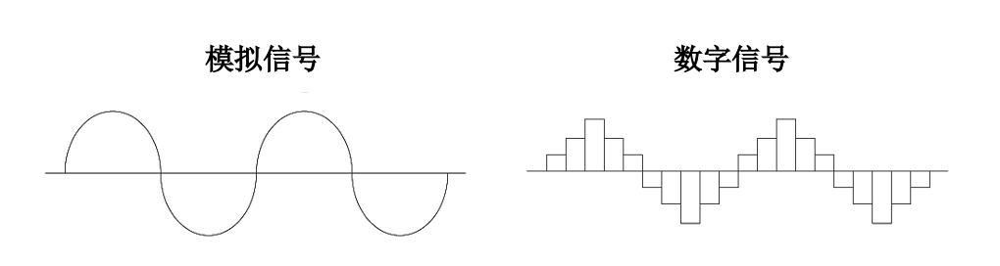
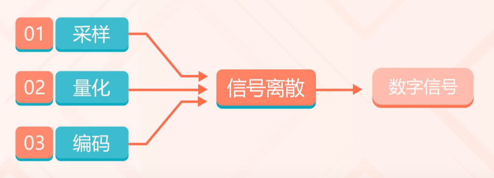
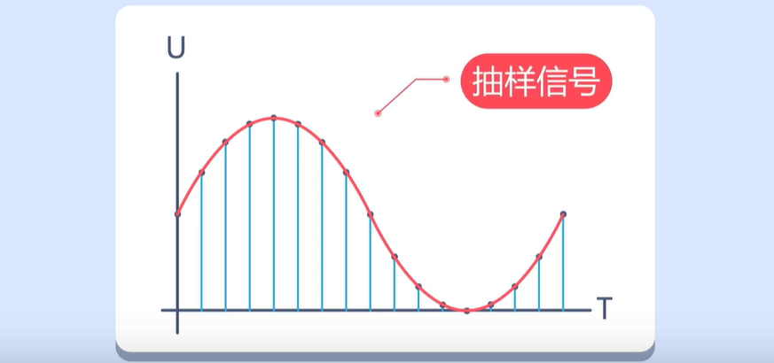
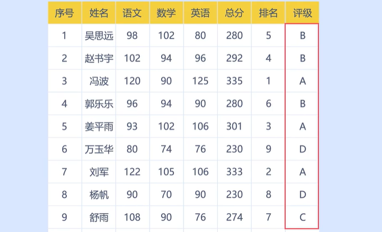
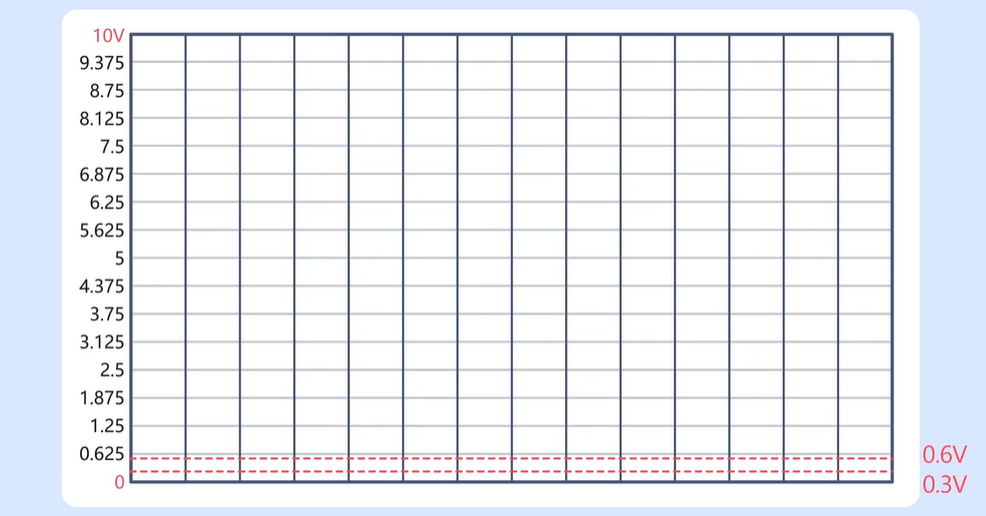
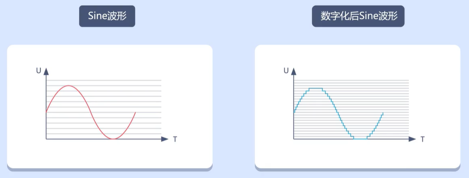
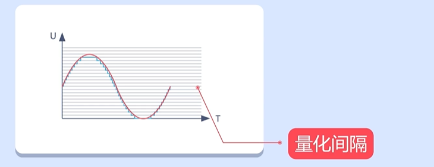
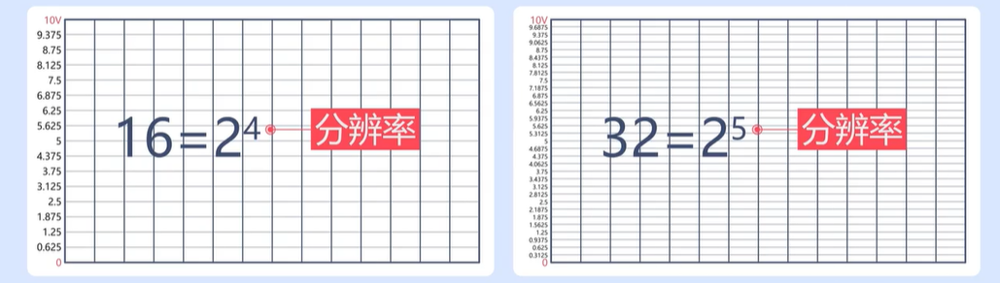
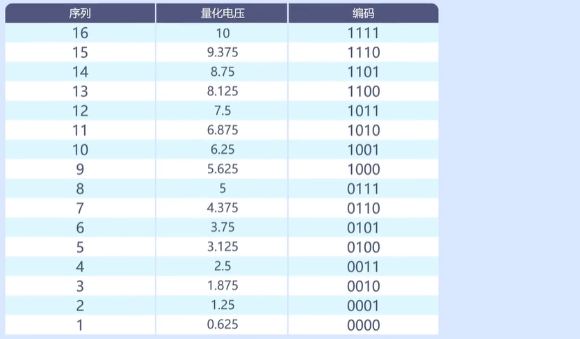

<!DOCTYPE lake>
<h1 data-lake-id="AdwZi" id="AdwZi"><span data-lake-id="u13fc0f58" id="u13fc0f58">模拟信号和数字信号</span></h1><p data-lake-id="u708844fe" id="u708844fe"></p><p data-lake-id="u9b8c48c7" id="u9b8c48c7"><strong><span class="lake-fontsize-12" data-lake-id="u22adab9d" id="u22adab9d">模拟信号</span></strong></p><p data-lake-id="u65de623f" id="u65de623f"><span data-lake-id="u9e79f4e5" id="u9e79f4e5">自然界中大多数物理量是连续变化的,比如温度、声音、压力等灯,它们在一定时间内,可以有无限多个不同的取值,这些信号就是模拟信号。模拟信号就是指用连续变化的物理量所表示的信号。</span></p><p data-lake-id="u3598b079" id="u3598b079"><span data-lake-id="u3aaf6528" id="u3aaf6528">自然界中的物理量都需要通过传感器将其转换成电信号后,才能进行进一步的分析,传感器在模拟物理量的变化,</span><span data-lake-id="u41de1233" id="u41de1233" style="background-color: rgb(247, 247, 248)">模拟信号是对原始物理量连续变化的近似表示。</span></p><p data-lake-id="uf672dacb" id="uf672dacb"><strong><span class="lake-fontsize-12" data-lake-id="u02974ded" id="u02974ded">数字信号</span></strong></p><p data-lake-id="u10d4b564" id="u10d4b564"><span data-lake-id="u4ccef333" id="u4ccef333" style="background-color: rgb(247, 247, 248)">数字信号是由离散的数字值构成的信号，这些数字值代表了某种物理量在一定时间间隔内的采样值。数字信号可以由模拟信号经过采样和量化转换得到，也可以由数字电路产生。数字信号通常由二进制数表示，可以在计算机和数字电路中进行处理和传输。</span></p><h1 data-lake-id="DUVPy" id="DUVPy"><span data-lake-id="u1e44d987" id="u1e44d987">ADC原理</span></h1><p data-lake-id="u3099082d" id="u3099082d"><span data-lake-id="ue0d83d90" id="ue0d83d90" style="background-color: rgb(247, 247, 248)">ADC（Analog-to-Digital Converter）即模数转换器，是一种将模拟信号转换为数字信号的电子元器件，用于实现模拟信号的数字化处理和采集。在嵌入式系统中，ADC广泛应用于传感器信号采集、电源管理、环境检测等领域。</span></p><p data-lake-id="u48dc1003" id="u48dc1003"></p><h2 data-lake-id="fiIFh" id="fiIFh"><span data-lake-id="u7415eaf2" id="u7415eaf2">采样</span></h2><p data-lake-id="u0c712b45" id="u0c712b45"><span data-lake-id="u3c73ab52" id="u3c73ab52" style="background-color: rgb(247, 247, 248)">采样指的是ADC将模拟信号的振幅值在一定时间间隔内进行测量，并将测量结果转换·为数字值</span></p><p data-lake-id="u15dc3d48" id="u15dc3d48"></p><p data-lake-id="u679efd27" id="u679efd27"><span data-lake-id="ua4039f04" id="ua4039f04" style="background-color: rgb(247, 247, 248)">采样之后得到的信号通常被称为抽样信号，因为在时间轴上它是离散的，但在幅值轴上是连续的</span></p><h2 data-lake-id="t0PMa" id="t0PMa"><span data-lake-id="u6ca971eb" id="u6ca971eb">量化</span></h2><p data-lake-id="u33e0a7f7" id="u33e0a7f7"><span data-lake-id="u02cfad32" id="u02cfad32" style="background-color: rgb(247, 247, 248)">ADC将每个采样值转换为最接近的数字值，这个过程称为量化。量化过程中，模拟信号被映射到最接近的数字值</span></p><p data-lake-id="u8530d8de" id="u8530d8de"></p><p data-lake-id="u4b61eff1" id="u4b61eff1"></p><p data-lake-id="u1d5b6bcc" id="u1d5b6bcc"><strong><span class="lake-fontsize-12" data-lake-id="u7a89c8ee" id="u7a89c8ee">量化之后的波形</span></strong></p><p data-lake-id="uf71d59bc" id="uf71d59bc"></p><p data-lake-id="uc815ddba" id="uc815ddba"><span data-lake-id="u9c6f5e60" id="u9c6f5e60">量化间隔越小，量化之后的波形分辨率越高，输入信号和输出信号越相似，系统精度越高</span></p><p data-lake-id="u46b1f16c" id="u46b1f16c"></p><blockquote data-lake-id="uf0f18a2c" id="uf0f18a2c"><p data-lake-id="u14189bcc" id="u14189bcc"><span data-lake-id="u829b65dc" id="u829b65dc">量化间隔越小,分辨率越高</span></p></blockquote><p data-lake-id="uacb16bf2" id="uacb16bf2"><strong><span class="lake-fontsize-12" data-lake-id="uf2e307f5" id="uf2e307f5">分辨率</span></strong></p><p data-lake-id="u1f9af85e" id="u1f9af85e"><span data-lake-id="u0a1a9778" id="u0a1a9778" style="background-color: rgb(247, 247, 248)">ADC（模数转换器）的分辨率是指其能够表示的最小数字量的大小，通常以比特数（bits）表示。分辨率决定了ADC能够将输入信号转换为多少个数字值，影响着数字信号的精度和准确性。</span></p><p data-lake-id="u2a775a14" id="u2a775a14"></p><blockquote data-lake-id="ufd3201fc" id="ufd3201fc"><p data-lake-id="ueb30c4b2" id="ueb30c4b2"><span data-lake-id="ub663030e" id="ub663030e">经过量化后,模拟信号成功数字化了,还需要进行编码</span></p></blockquote><p data-lake-id="u59f44e7c" id="u59f44e7c"><strong><span class="lake-fontsize-12" data-lake-id="u653f76ac" id="u653f76ac">编码</span></strong></p><p data-lake-id="uab9c6275" id="uab9c6275"><span data-lake-id="u7274bb49" id="u7274bb49">编码就是用0和1组合为每个量化区间编号,代替原来的电压值。</span></p><p data-lake-id="u7d8527df" id="u7d8527df"></p><p data-lake-id="ucaf08803" id="ucaf08803"><span data-lake-id="ua6bdf41f" id="ua6bdf41f" style="background-color: rgb(247, 247, 248)">ADC的基本概念包括以下几个方面：</span></p><ol list="u61ea14d3"><li data-lake-id="u90af8542" fid="u604f2e2c" id="u90af8542"><span data-lake-id="u604b0b3e" id="u604b0b3e" style="background-color: rgb(247, 247, 248)">分辨率：ADC的分辨率是指ADC输出数字信号的位数，也就是最终数字信号的精度。例如，12位分辨率的ADC的量化级别为2^12，即4096。</span></li><li data-lake-id="u5783bfc5" fid="u604f2e2c" id="u5783bfc5"><span data-lake-id="ua8e2bd3e" id="ua8e2bd3e" style="background-color: rgb(247, 247, 248)">采样率：ADC的采样率是指ADC每秒钟可以完成多少次采样，即每秒钟可以将模拟信号采集多少次。采样率越高，ADC对输入信号的采样精度就越高。</span></li><li data-lake-id="uf4429361" fid="u604f2e2c" id="uf4429361"><span data-lake-id="u3f3e5885" id="u3f3e5885" style="background-color: rgb(247, 247, 248)">通道：ADC的通道是指ADC可以采集的模拟信号的输入通路。每个通道对应一个输入引脚，可以采集对应的模拟信号。</span></li><li data-lake-id="u4ee6c949" fid="u604f2e2c" id="u4ee6c949"><span data-lake-id="u35cdcc89" id="u35cdcc89" style="background-color: rgb(247, 247, 248)">时钟：ADC的时钟是指ADC进行采样和量化的时钟信号，时钟频率决定了ADC转换速率的上限。</span></li></ol><h2 data-lake-id="04aa717b" id="04aa717b"><strong><span data-lake-id="uc6d6e075" id="uc6d6e075">ADC优点</span></strong></h2><ol list="u3ac0fdb3"><li data-lake-id="u9de10afd" fid="u257122a9" id="u9de10afd" style="text-align: left"><span data-lake-id="u21e43787" id="u21e43787" style="background-color: rgb(247, 247, 248)">数字信号具有良好的抗干扰性。数字信号是由一系列离散的数字表示，因此可以抵抗模拟信号受到的各种干扰，如噪声、漂移等。</span></li><li data-lake-id="uef82dc8e" fid="u257122a9" id="uef82dc8e" style="text-align: left"><span data-lake-id="u5af04bf5" id="u5af04bf5" style="background-color: rgb(247, 247, 248)">方便数字信号的存储、处理和传输。由于数字信号是离散的，因此它们可以轻松存储在计算机内存或其他数字设备中，方便进行处理和传输。</span></li><li data-lake-id="u36fcc4b9" fid="u257122a9" id="u36fcc4b9" style="text-align: left"><span data-lake-id="u4a55566f" id="u4a55566f" style="background-color: rgb(247, 247, 248)">具有可编程性。现代的ADC出现了很多可编程的功能，例如可编程增益、采样率和滤波器等，可以根据不同的应用场景进行优化。</span></li><li data-lake-id="ud04d96c8" fid="u257122a9" id="ud04d96c8" style="text-align: left"><span data-lake-id="ucabc2205" id="ucabc2205" style="background-color: rgb(247, 247, 248)">适用性广泛。ADC被广泛应用于工业、通信、医疗、电子测量、音频、视频等领域，可转换各种不同类型的模拟信号，包括电压、电流、声音、光信号等。</span></li></ol><h2 data-lake-id="qnffL" id="qnffL"><span data-lake-id="u6a4a1950" id="u6a4a1950">GD32中的ADC</span></h2><p data-lake-id="u7250f708" id="u7250f708" style="text-indent: 2em"><span data-lake-id="u511b6790" id="u511b6790">GD32F4采用的是逐次逼近型的12位ADC，它有 19 个多路复用通道可以转换。19个通道来自 16 个外部通道、2个内部通道和一个电池电压（VBAT）通道的模拟信号。其中16个外部通道是通过GPIO复用得来，2个内部通道分别是内部温度传感器和内部参考电压。而电池电压VBAT是需要将电压接入芯片的VBAT引脚才可采集。16个外部通道，都对应单片机的某个引脚，这个引脚不是固定的，可以是一个通道一个引脚，也可以是一个通道两个引脚。</span></p>